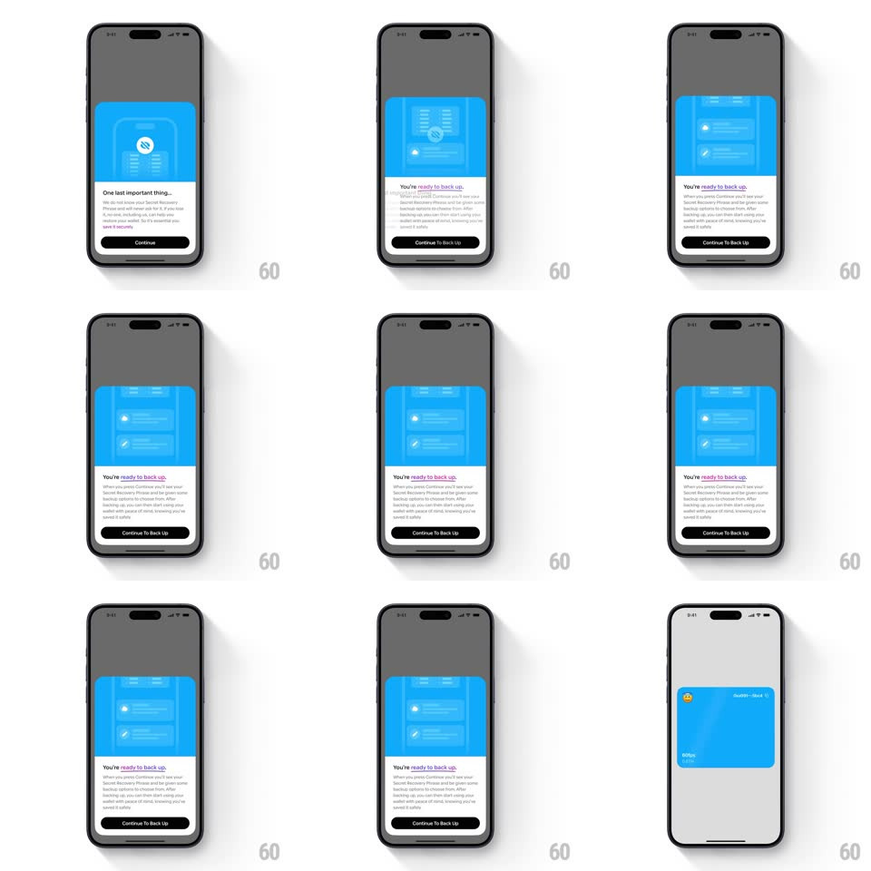

Media
Frame-by-frame

Rebuild this interaction 1:1: Family's bottom-sheet morph - a half-height bottom modal ("One last important thing...", no-backup illustration in the header, Continue button) transforms in place on tap: the blue header illustration swaps to a backup-summary graphic, the sheet grows taller, the copy switches to "You're ready to back up." with new body text, and the button relabels "Continue To Back Up".

Rebuild this interaction 1:1: Family's bottom-sheet morph - a half-height bottom modal ("One last important thing...", no-backup illustration in the header, Continue button) transforms in place on tap: the blue header illustration swaps to a backup-summary graphic, the sheet grows taller, the copy switches to "You're ready to back up." with new body text, and the button relabels "Continue To Back Up".
## Integration
Integration: stack-agnostic spec - springs given as stiffness/damping, timed motions as duration + curve; map every value to your framework and animation library of choice.
## Scene
Dimmed app screen with a white bottom sheet: rounded top corners, a blue illustrated header panel, title + body text, and a black primary button. Two content states: "One last important thing..." (warning illustration) and "You're ready to back up." (backup summary illustration).
## Motion spec
Pattern: in-place sheet content morph.
- Tap Continue: the blue header illustration cross-fades to the new graphic (250ms) with a slight upward drift (translateY -8px during the swap).
- The sheet's height grows to fit the new content (spring ~340/26, 350ms) - the top edge rises while the bottom stays pinned.
- The title swaps with a slide-up/fade (old text exits up 8px, new text enters from below, 200ms, overlapping), body copy cross-fades (250ms).
- The button label cross-fades to "Continue To Back Up" (200ms); the button itself never moves.
- The dim and sheet position relative to the bottom edge stay constant - only height and content change.
## Calibration
- The sheet is bottom-anchored: growth happens at the top edge only.
- The illustration swap leads, text follows - a 50ms offset between header and title.
## Reduced motion
Whole sheet content cross-fades (250ms); height changes instantly.
## Don't miss
- This is a morph, not a navigation - no slide-out, no new sheet; the same sheet changes.
- The blue header panel keeps its size and color across the morph - only its illustration changes.